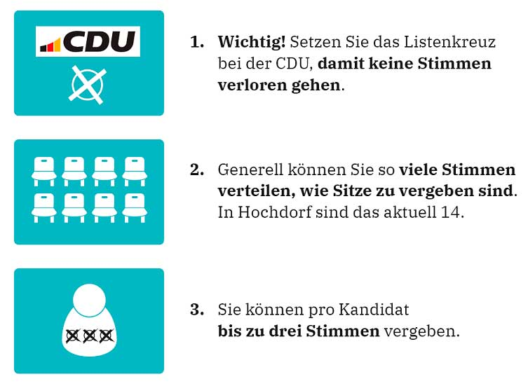
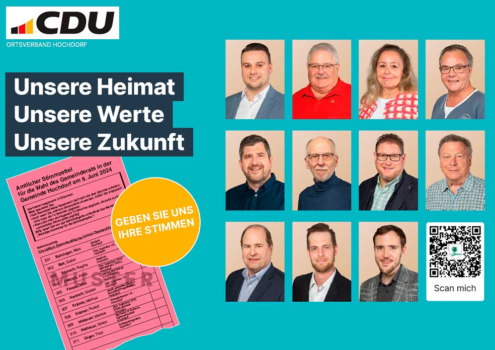

|
CDU Ortsverband Hochdorf
Kommunalwahl 2024
|
|
CDU Ortsverband Hochdorf
Kommunalwahl 2024
|
am 09. Juni 2024 stehen wichtige Wahlen an, bei denen Sie 체ber die Aufstellung des Hochdorfer Gemeinderats f체r die n채chsten 5 Jahre entscheiden.
Auf unserem Wahlvorschlag finden Sie engagierte Personen, die mit Hochdorf eng verbunden sind und vielf채ltige Kenntnisse und Erfahrungen aus den unterschiedlichsten Bereichen mitbringen. Sie alle sind bereit, als Gemeinder채te Verantwortung zum Wohle unserer Gemeinde zu 체bernehmen und im Dialog mit den B체rgerinnen und B체rgern zu handeln.
Auf den folgenden Seiten k철nnen Sie sich 체ber unsere Kandidaten f체r den Gemeinderat informieren.
Wir bitten alle B체rgerinnen und B체rger, von ihrem Wahlrecht Gebrauch zu machen und uns ihre Stimmen zu geben. Die CDU wird auf verschiedenen Plattformen wie Facebook, Instagram und anderen Medien Informationen und Wahlaufrufe zur Verf체gung stellen.

Aktuelle Infos und Termine finden Sie auf unserer Website.
